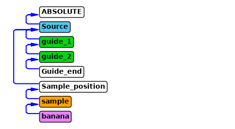
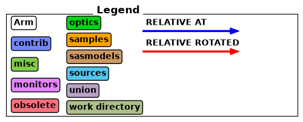
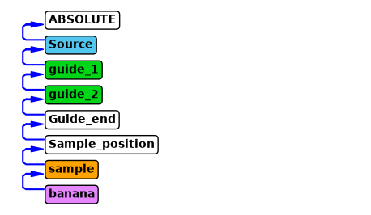
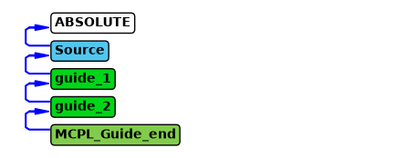
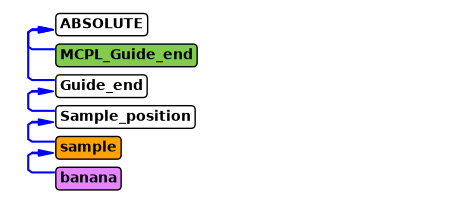
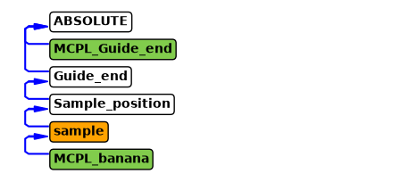
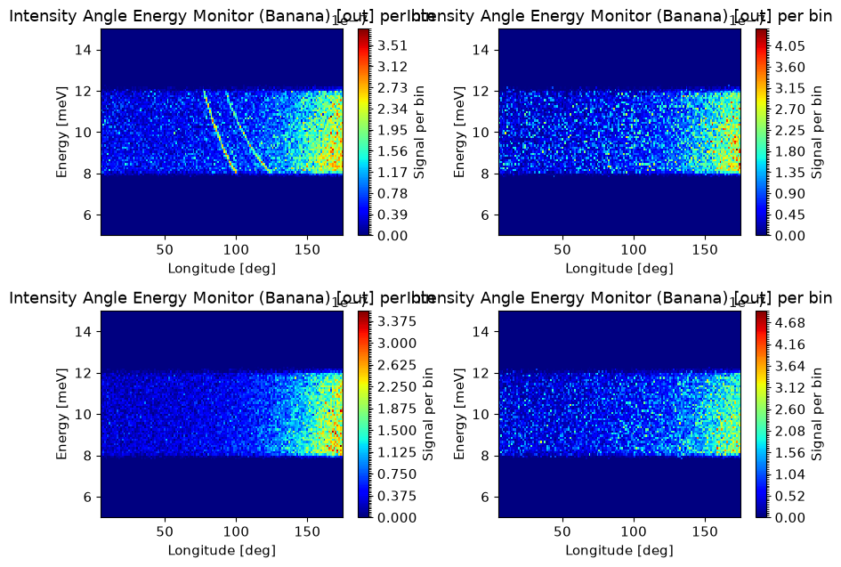

Dynamic instrument cuts with MCPL bridges#
There are some instances where it is beneficial to write to McStas instruments to simulate something by transfering the beam from one to the other through an MCPL file. This is most commonly done to save on computational time, imagine for example an instrument with a long complicated guide with high resolution choppers, only allowing few neutrons through. If one wants to simulate a number of different samples on such an instrument, it would be nice to run the simulation up until the end of the guide once, and then once for each sample starting after the guide.
That can be done in McStas using the MCPL output and MCPL_input component, which saves and loads the beam to a file respectively. Then one would have two instrument files, the first ending with an MCPL_output, and the next starting with an MCPL_input.
In McStasScript it is possible to do the same thing dynamically through the instrument object. The instrument can be executed in segments, and the MCPL_output / MCPL_input components are added automatically. The instrument object will also keep track of the generated MCPL files. This tutorial will show an example of how this can be done, and importantly show that there are some limitations on how the instrument is written to allow for this.
A simple example instrument#
The instrument below does not benefit greatly from being segmented, but is sufficient to show how the system is used.
import mcstasscript as ms
instr = ms.McStas_instr("bridge_demo", input_path="run_folder")
src = instr.add_component("Source", "Source_simple")
src.E0 = instr.add_parameter("energy", value=10)
src.set_parameters(xwidth=0.1, yheight=0.1, dE=2,
focus_xw=0.03, focus_yh=0.03, dist=2)
guide_1 = instr.add_component("guide_1", "Guide_gravity")
guide_1.set_parameters(w1=0.03, h1=0.03, m=3, l=10)
guide_1.set_AT(2, RELATIVE=src)
guide_2 = instr.add_component("guide_2", "Guide_gravity")
guide_2.set_parameters(w1=0.03, h1=0.03, m=3, l=10)
guide_2.set_AT(guide_1.l + 0.01, RELATIVE=guide_1)
guide_end = instr.add_component("Guide_end", "Arm")
guide_end.set_AT(guide_2.l, RELATIVE=guide_2)
sample_position = instr.add_component("Sample_position", "Arm")
sample_position.set_AT(22.5, RELATIVE=src)
sample = instr.add_component("sample", "PowderN", RELATIVE=sample_position)
sample.reflections = instr.add_parameter("string", "data", value='"Cu.laz"')
sample.set_parameters(radius=0.005, yheight=0.05)
banana = instr.add_component("banana", "Monitor_nD", RELATIVE=sample)
banana.xwidth = 2.0
banana.yheight = 0.3
banana.restore_neutron = 1
banana.filename = '"banana.dat"'
banana.options = '"theta limits=[5 175] bins=150, energy limits=[5,15] bins=100, banana"'
instr.show_diagram()

Requirements for the instrument to be segmented#
In order to cut the instrument into two sections, the positions and rotations in the latter part are not allowed to refer to any component in the first part. In the above example it would not be possible to make a cut at any component from guide_1 to Guide_end, as the sample position would not be able to be set relative to something in another instrument file. It would however be possible to create a cut at the Source (not very useful) or at the Sample_position and at any component after.
In order to set the end of an instrument segment, one use the run_to method on the instrument object, providing the name of the component or component object of the component that should act as the transfer point. This will check if its allowed to segment the instrument at that component, so lets try at the Guide_end which wouldn’t be possible.
try:
instr.run_to(guide_end)
except Exception as e:
print(e)
When using a subset of the instrument, component references must be only internal as these sections are split into separate files. When seeing only the specified subset of the instrument, this reference can not be resolved.
In this case the remaining instrument would fail.
Component 'Sample_position' referenced unknown component named 'Source'.
This check can be skipped with settings(checks=False)
Instruments suitable for being segmented#
Instruments can be written in a way where there are more options to segment the instrument, we could just specify the position of the sample relative to the end of the guide, then this instrument could be cut anywhere.
sample_position.set_AT(0.5, RELATIVE=guide_end)
instr.show_diagram()


There is no need to write all instruments with only references to the previous component in order to allow segmentation of the instrument at every component, but it is worthwhile to keep this in mind for points in your instrument where segmentation is natural, such as the end of a guide.
Running the first part of an instrument#
To run the instrument up to a certain point and dump the beam to disk, one need to use the run_to method to set the end point, and then run the instrument as one normally would with backengine. One can always use show_run_subset to see what part of the instrument is currently selected for execution.
instr.run_to(guide_end)
instr.show_run_subset()
Running from start of the instrument to component named 'Guide_end'.
Metadata for beamdump#
It is possible to set the name of the beam dump and to add a comment, which is good practice so it easier to keep track of the beam dumps.
instr.run_to(guide_end, "10 meV", comment="Run with spread of +/- 2 meV")
Instrument information#
This information is also reflected in the instrument diagram and show components. Here it is visible that the Guide_end component has been substituted with a MCPL_Guide_end component that has been given its exact position.
instr.show_components()
instr.show_diagram()
Source Source_simple AT (0, 0, 0) ABSOLUTE
guide_1 Guide_gravity AT (0, 0, 2) RELATIVE Source
guide_2 Guide_gravity AT (0, 0, 10.01) RELATIVE guide_1
MCPL_Guide_end MCPL_output AT (0, 0, 10) RELATIVE guide_2
Showing subset of instrument until cut at 'Guide_end' component.

This part of the instrument can now be executed as normal.
instr.settings(suppress_output=True, mpi="auto")
instr.backengine()
[]
The dump database#
The instrument object keeps track of the generated MCPL files in a small database written to disk next to the instrument file. These can be shown with the show_dumps method, and will persist through sessions as the data is saved on disk. This database doesn’t copy the MCPL data, but keeps track on where it is located on the disk, so moving or deleting the generated data folders can cause trouble.
instr.show_dumps()
Run point:
run_name : tag : time : comment
------------------------------------------------------------ --- -- -
Guide_end:
10 meV : 0 : 24/07/2026 13:55:15 : Run with spread of +/- 2 meV
Information on a specific beam dump#
It is possible to get further information on one beam dump with the show_dump method. This method require the component name where the dump is located, and the most recent version is then displayed. It is possible to add run_name and tag to show a specific beam dump.
instr.show_dump(guide_end)
data_path : ../bridge_demo/bridge_demo_Guide_end.mcpl.gz
dump_point : Guide_end
parameters : {'energy': 10, 'data': '"Cu.laz"', 'run_to_mcpl': '"bridge_demo_Guide_end.mcpl"'}
run_name : 10 meV
comment : Run with spread of +/- 2 meV
tag : 0
record_name : 10 meV_0
time_loaded : 24/07/2026 13:55:15
instr.show_dump(guide_end, run_name="10 meV", tag=0)
data_path : ../bridge_demo/bridge_demo_Guide_end.mcpl.gz
dump_point : Guide_end
parameters : {'energy': 10, 'data': '"Cu.laz"', 'run_to_mcpl': '"bridge_demo_Guide_end.mcpl"'}
run_name : 10 meV
comment : Run with spread of +/- 2 meV
tag : 0
record_name : 10 meV_0
time_loaded : 24/07/2026 13:55:15
Clearing the database#
Clearing this database can be done by removing the database folder from the disk, it is a folder that has the same name as the instrument and ends with “_db”. There is no method in McStasScript to do so as there is risk of deleting important data on accident. It is also possible to change the name of the instrument, as the database is tied to the name.
Running from a beam dump#
Now that we have a beam dump in the database, we can use it to run from. It is however important to remember run_to is still set to guide_end, so asking the instrument to run_from guide_end would not be allowed.
try:
instr.run_from(guide_end)
except Exception as e:
print(e)
Running from and to the same component is not supported here both run_from and run_to are set to 'Guide_end'.
Clearing run_to or run_from#
It is possible to clear run_to or run_from by giving the input None, or both can be cleared with the method reset_run_points. This allows us to run from the guide_end beam dump. The run_from method would result in an error if no dumps where found at that point in the beam dump database.
instr.reset_run_points()
instr.run_from(guide_end)
instr.show_components()
instr.show_diagram()
Showing subset of instrument after cut at 'Guide_end' component.
MCPL_Guide_end MCPL_input AT (0, 0, 0) ABSOLUTE
Guide_end Arm AT (0, 0, 0) ABSOLUTE
Sample_position Arm AT (0, 0, 0.5) RELATIVE Guide_end
sample PowderN AT (0, 0, 0) RELATIVE Sample_position
banana Monitor_nD AT (0, 0, 0) RELATIVE sample

Now we see the part of the instrument after the Guide_end component as expected.
Selecting a certain beam dump#
Just running run_from will select the most recent beam dump at that position, and is often the appropriate choice. It is however possible to select any beam dump in the database, provided it is at the specified component using the run_name and tag keyword arguments.
instr.run_from(guide_end, run_name="10 meV", tag=0)
Settings to the MCPL_input and MCPL_output components#
Both the run_from and run_to methods are able to pass parameters to the MCPL components used, so the run_to method accepts parameters for the MCPL_output component, while run_from accept parameters from the MCPL_input component. Here we show the help of the MCPL_input component.
instr.component_help("MCPL_input")
___ Help MCPL_input ________________________________________________________________
|optional parameter|required parameter|default value|user specified value|
filename = 0 [str] // Name of neutron mcpl file to read
polarisationuse = 1.0 [ ] // If !=0 read polarisation vectors from file
verbose = 1.0 [ ] // Print debugging information for first 10 particles read
Emin = 0.0 [meV] // Lower energy bound. Particles found in the MCPL-file below
the limit are skipped
Emax = FLT_MAX [meV] // Upper energy bound. Particles found in the MCPL-file
above the limit are skipped
repeat_count = 1 [1] // Repeat contents of the MCPL file this number of times.
NB
v_smear = 0.0 [1] // When repeating events, make a Gaussian MC choice within
v_smear*V around particle velocity V
pos_smear = 0.0 [m] // When repeating events, make a flat MC choice of position
within pos_smear around particle starting position
dir_smear = 0.0 [deg] // When repeating events, make a Gaussian MC choice of
direction within dir_smear around particle direction
preload = 0 [ ] // Load particles during INITIALIZE. On GPU preload is forced
-------------------------------------------------------------------------------------
When loading a beam from disk, it is possible to run each neutron several times with small differences in its position, direction and energy. This can have similar problematic effects on the statistics as SPLIT if used without care, so think about the justification to use repeats and smear for your application. Using smear of direction from a source with an almost isotropic distribution of directions would be sensible, but using it on a tightly collimated beam could introduce inaccuracies.
instr.run_from(guide_end, repeat_count=3, v_smear=0.01, dir_smear=0.1)
Running a segment of the simulation#
As a demonstration we choose to run from the guide_end to (but not including) the detector to show that one can use both run_from and run_to at the same time, and thus segment an instrument into an arbitrary number of segments.
instr.run_to(banana, run_name="Cu sample")
instr.show_components()
instr.show_diagram()
Showing subset of instrument after cut at 'Guide_end' component.
MCPL_Guide_end MCPL_input AT (0, 0, 0) ABSOLUTE
Guide_end Arm AT (0, 0, 0) ABSOLUTE
Sample_position Arm AT (0, 0, 0.5) RELATIVE Guide_end
sample PowderN AT (0, 0, 0) RELATIVE Sample_position
MCPL_banana MCPL_output AT (0, 0, 0) RELATIVE sample
Showing subset of instrument until cut at 'banana' component.

Executing the simulation#
Now that we have one run for a 10 meV beam at the sample position, we can quickly simulate a range of different samples using the same beam. We use the following powder descriptions included in McStas to get 4 different powder patterns.
Cu.laz
Al.laz
Au.laz
Na2Ca3Al2F14.laz
Since the underlying instrument doesn’t change, we can save some time by disabling force_compile when running these simulations.
instr.backengine()
instr.settings(force_compile=False)
instr.set_parameters(data='"Al.laz"')
instr.run_to(banana, run_name="Al sample")
instr.backengine()
instr.set_parameters(data='"Au.laz"')
instr.run_to(banana, run_name="Au sample")
instr.backengine()
instr.set_parameters(data='"Na2Ca3Al2F14.laz"')
instr.run_to(banana, run_name="Calibration")
instr.backengine()
instr.settings(force_compile=True)
instr.show_dumps()
Run point:
run_name : tag : time : comment
------------------------------------------------------------ --- -- -
Guide_end:
10 meV : 0 : 24/07/2026 13:55:15 : Run with spread of +/- 2 meV
banana:
Calibration : 0 : 24/07/2026 13:55:56 :
Au sample : 0 : 24/07/2026 13:55:47 :
Al sample : 0 : 24/07/2026 13:55:37 :
Cu sample : 0 : 24/07/2026 13:55:28 :
Running to the end of the instrument#
We now wish to just run the detector for the four different beam dumps made just before the detector. To do so we set run_to to None, letting the instrument know we intend to run to the end of the instrument, and setting run_from to banana with specifications on the dump corresponding to the desired sample.
instr.run_to(None)
instr.run_from(banana, run_name="Cu sample")
data1 = instr.backengine()
instr.settings(force_compile=False) # Avoid recompiling
instr.run_from(banana, run_name="Al sample")
data2 = instr.backengine()
instr.run_from(banana, run_name="Au sample")
data3 = instr.backengine()
instr.run_from(banana, run_name="Calibration")
data4 = instr.backengine()
instr.settings(force_compile=True)
Plotting the resulting data#
We can now plot the data and see we indeed get four different sets of powder data.
ms.make_sub_plot(data1 + data2 + data3 + data4)
